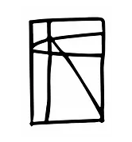
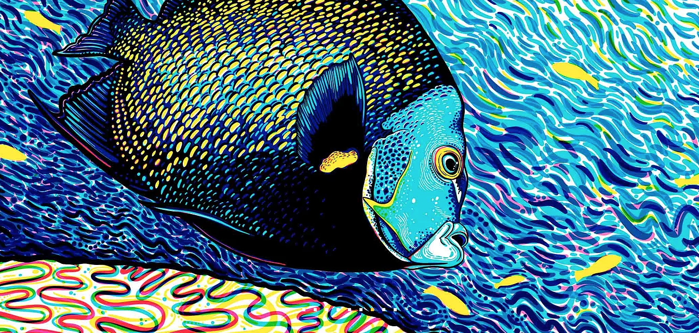
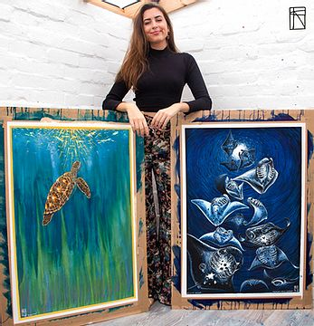

Francesca page


Meet the artist
"As well as my art being an extension of my soul and serves as a form of personal expression and therapy, it also gives me a voice for nature. It is a powerful medium to communicate my experiences out in the field and also serves as an important catalyst to connect you, the viewer, with the incredible planet I have fallen in love with. Art opens the empathy door, inviting you in to a world you may not have explored or to a place in your mind you have not investigated. Art helps to provoke feeling and passion, which I believe is the foundation to taking the first steps into anthropogenic consciousness. Once you love something you will do anything to protect it. "
Check out Francesca's latest big project, Reef Stories ...